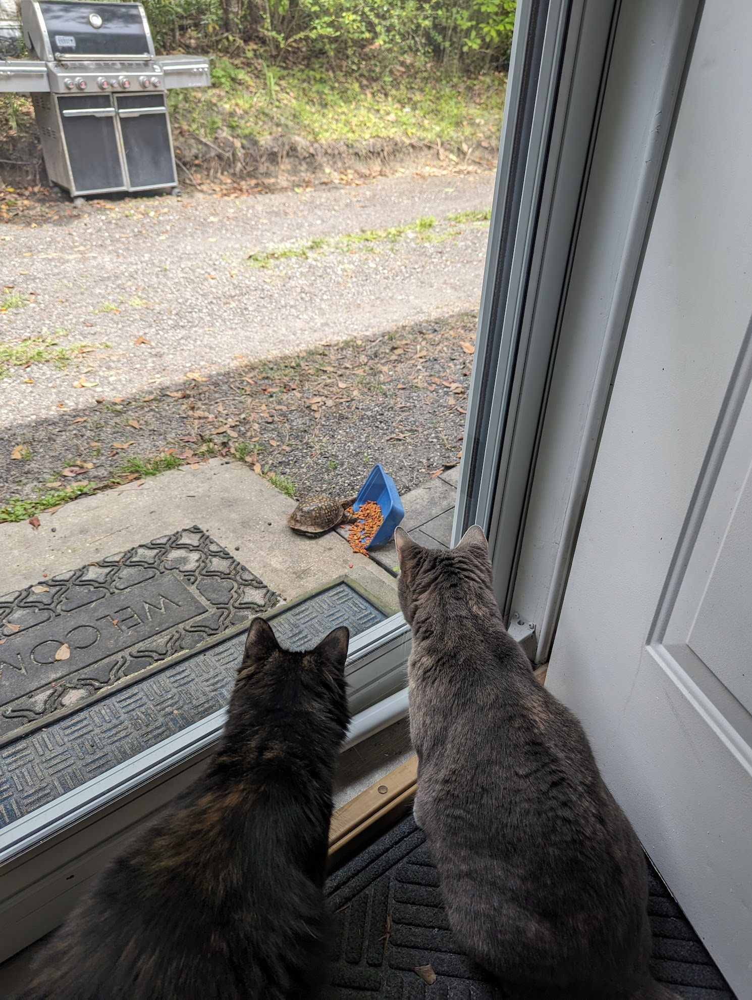

Download Story: The Cats and the Turtle
Once upon a time, there were two cats who lived in a small rural town. They were very good friends and always played together.
One day, they met a turtle who was looking for some friends. The cats were very happy to meet the turtle and they all became good friends. They played together
every day and had a lot of fun. The cats and the turtle lived happily ever after.

Download Story: The Time Traveler's Gift
In a quiet village by the sea, there lived a young boy named Max. He was fascinated by stories of adventure and longed to explore the world beyond his village. One day, while exploring an abandoned lighthouse, Max discovered an old, intricately designed pocket watch.
As he examined the watch, it began to glow, and suddenly, Max found himself in a bustling market in ancient Egypt. Amazed and slightly bewildered, he realized that the pocket watch had the power to travel through time. Max embarked on an incredible journey, visiting ancient civilizations, witnessing historic events, and meeting legendary figures.
In Rome, he watched gladiators in the Colosseum; in China, he marveled at the construction of the Great Wall; in medieval Europe, he met knights and witnessed grand tournaments. Everywhere he went, Max collected souvenirs and stories, each adventure more thrilling than the last.
Eventually, Max returned to his village, now filled with a wealth of knowledge and experiences. He used his newfound wisdom to help his community, sharing stories and teaching about different cultures and histories. The villagers were amazed by his tales and grateful for his contributions.
Max's adventures taught him that while exploring the world was exciting, the greatest gift was the ability to share his experiences and enrich the lives of others. The pocket watch, once a tool for personal adventure, became a symbol of knowledge and connection, reminding Max that the true magic of time travel was the gift of learning and sharing.
Download Story: The Forgotten Melody
In the bustling city of Aria, there lived a talented musician named Elena. She played the violin with such passion that it seemed to echo the soul of the city itself. However, despite her talent, Elena struggled to find her place in the competitive world of music.
One evening, as she wandered through a quiet alley, she stumbled upon an old, forgotten music shop. Drawn inside by an invisible force, she discovered a dusty violin in the corner. Its wood was aged, and it looked as if it hadn't been played in decades. Intrigued, Elena picked it up and began to play.
The moment her bow touched the strings, an ethereal melody filled the room. It was a hauntingly beautiful tune, unlike anything she had ever heard. The music seemed to tell a story of love, loss, and hope. As she played, Elena felt a connection to the violin, as if it was sharing its memories with her.
Word of Elena's mesmerizing performance spread quickly, and soon, she was invited to play at the grand Aria Concert Hall. On the night of her performance, the hall was filled to capacity. As she played the forgotten melody, the audience was captivated. The music touched their hearts, bringing tears to their eyes and smiles to their faces.
After the concert, an old man approached Elena. With a tear in his eye, he revealed that the violin had once belonged to his late wife, a renowned violinist. He had lost it years ago and never thought he would hear its music again. Elena realized that through her, the violin had found its way home.